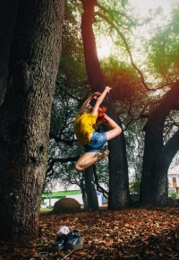

Валерия
Можно написать тысячу слов о том, как мне нравится педагог, но хочу акцентироваться внимание на общении педагога с танцорами, да, именно танцорами, общение легкое, дружелюбное, веселое, нету того давления которое могут донести многие преподаватели по танцам, а подборка костюмов на соревнования, да они же идеальные ! хореографии заметно отличаются, что является плюсом, от мелодичной, спокойной музыки, до битовых электронных исполнителей, Оля учит чувствовать музыку и танец.
Можно написать тысячу слов о том, как мне нравится педагог, но хочу акцентироваться внимание на общении педагога с танцорами, да, именно танцорами, общение легкое, дружелюбное, веселое, нету того давления которое могут донести многие преподаватели по танцам, а подборка костюмов на соревнования, да они же идеальные ! хореографии заметно отличаются, что является плюсом, от мелодичной, спокойной музыки, до битовых электронных исполнителей, Оля учит чувствовать музыку и танец.
Екатерина
Про атмосферу верно сказано Я уверена, что если бы не ты, я бы так не полюбила танцы и не занималась бы сейчас этим. Для меня ты идеальные педагог, и помимо новых умений в самом танце, занятие оставляет кучу положительных эмоций, даже если у нас все время была тупка и ты ругалась. Ты помогаешь нам совершенствоваться, имея к каждому свой подход. Я обожаю наши танцы и все, что мы делаем вместе. Короче говоря, Оль, ты моя танцевальная муза
Про атмосферу верно сказано Я уверена, что если бы не ты, я бы так не полюбила танцы и не занималась бы сейчас этим. Для меня ты идеальные педагог, и помимо новых умений в самом танце, занятие оставляет кучу положительных эмоций, даже если у нас все время была тупка и ты ругалась. Ты помогаешь нам совершенствоваться, имея к каждому свой подход. Я обожаю наши танцы и все, что мы делаем вместе. Короче говоря, Оль, ты моя танцевальная муза

Анастасия
Мне очень нравится заниматься у тебя. Ты очень просто и понятно объясняешь все движения, подбираешь самую крутую музыку для тренировок, ставишь отличные, мощные танцы. А еще я обожаю атмосферу, которая заполняет зал во время твоих занятий. Это все твоя харизма, шуточки, комментарии. Даже когда мы что-то делаем неправильно, и ты в сотый раз объясняешь нам, начинаешь злиться, ты выглядишь такой милахой. На твоих занятиях мы все оставляли всю свою физическую силу, но зато, получали такой душевный подъем! Все это отличная хореография, сделанная специально под нас, отличный коллектив, куда входят самые общительные и веселые девчата, и прекрасный хореограф, самый талантливый, любимый и родной.
Мне очень нравится заниматься у тебя. Ты очень просто и понятно объясняешь все движения, подбираешь самую крутую музыку для тренировок, ставишь отличные, мощные танцы. А еще я обожаю атмосферу, которая заполняет зал во время твоих занятий. Это все твоя харизма, шуточки, комментарии. Даже когда мы что-то делаем неправильно, и ты в сотый раз объясняешь нам, начинаешь злиться, ты выглядишь такой милахой. На твоих занятиях мы все оставляли всю свою физическую силу, но зато, получали такой душевный подъем! Все это отличная хореография, сделанная специально под нас, отличный коллектив, куда входят самые общительные и веселые девчата, и прекрасный хореограф, самый талантливый, любимый и родной.
Лилия
Оль, ты самый родной педагог. У тебя нереально вкусная хореография и ламповая атмосфера в зале. Новый номер - новый стиль и задумка, ты развиваешь наше воображение по максимуму. За час ты создаёшь идеальную тренировку с танцем, растяжкой и подкачкой. Ты объясняешь нам движения до тех пор, пока мы не поймём. Ты показываешь все прелести танца снова и снова, пока мы не почувствуем его. Ты учишь нас любить себя и свои движения.
Оль, ты самый родной педагог. У тебя нереально вкусная хореография и ламповая атмосфера в зале. Новый номер - новый стиль и задумка, ты развиваешь наше воображение по максимуму. За час ты создаёшь идеальную тренировку с танцем, растяжкой и подкачкой. Ты объясняешь нам движения до тех пор, пока мы не поймём. Ты показываешь все прелести танца снова и снова, пока мы не почувствуем его. Ты учишь нас любить себя и свои движения.
Лилия
Здравствуйте, хочу оставить несколько строк о моих чувствах к танцам и любимом педагоге. Речь пойдёт о Полине Осиповой. Все начиналось с Jazz Funck для меня это было сложно и быстро, но придя к Полине, совершенно случайно, мир танцев перевернулся. Танцую у нее в группе больше года, у меня появилась скорость и я стала слышать музыку, и теперь мы танцуем High Heels . Поля даёт информацию так, что её легко усваивать и постепенно набираешь обороты, растешь и движешься под биты, причём в группе бывают девочки разного уровня подготовки, тем не менеее уроки проходят на одном дыхании, всем комфортно, и если что-то не получается, пробкем снова и снова.
Здравствуйте, хочу оставить несколько строк о моих чувствах к танцам и любимом педагоге. Речь пойдёт о Полине Осиповой. Все начиналось с Jazz Funck для меня это было сложно и быстро, но придя к Полине, совершенно случайно, мир танцев перевернулся. Танцую у нее в группе больше года, у меня появилась скорость и я стала слышать музыку, и теперь мы танцуем High Heels . Поля даёт информацию так, что её легко усваивать и постепенно набираешь обороты, растешь и движешься под биты, причём в группе бывают девочки разного уровня подготовки, тем не менеее уроки проходят на одном дыхании, всем комфортно, и если что-то не получается, пробкем снова и снова.